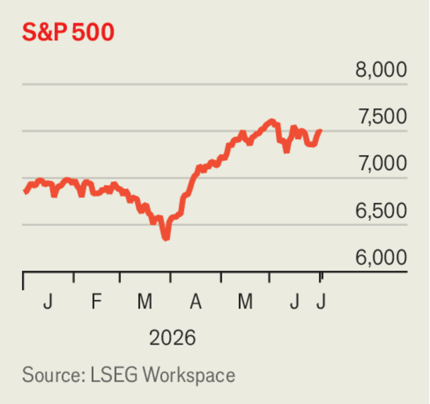

Business
July 2nd 2026

The Trump administration lifted its ban on non-Americans using Anthropic’s latest Fable and Mythos AI models, which it had decreed in mid-June. The ban was imposed over a potential breach of security protocols in Fable; as a result Anthropic closed all access to Fable and Mythos, even internally. The AI firm has implemented new safeguards and worked with the Commerce Department to resolve the concerns, but the issue has highlighted the ease with which the American government can restrict access to frontier AI. Anthropic said it underlined the need for the industry to find a consistent way to assess and fix potential evasions of AI safeguards.

Despite the conflict with Iran and some bouts of volatility, stock markets recorded their best quarter in six years. The S&P 500 rose by 15% from April to June, the NASDAQ Composite by 21% and the pan-European STOXX 600 by 10%. Japan’s Nikkei 225 had its best three months ever, rising by 37%. South Korea’s KOSPI increased by 68%. Even so, the share prices of some big tech giants did not fare so well in June, with Apple, Meta and Nvidia all down. Microsoft’s stock fell by 17%, its worst month since December 2000.
South Korea’s chipmakers were largely responsible for a 70.9% year-on-year rise in the country’s exports in June, the biggest such leap in 50 years. Driven by demand for memory chips, semiconductor exports were up by 200%. Samsung and SK Hynix, meanwhile, joined the government in announcing a $600bn investment for new chip factories in South Korea’s least-developed areas.
The yen hit ¥162 to the dollar for the first time in 40 years, increasing the likelihood of Japan’s financial authorities intervening to defend the currency. Investors are betting that Japan will find it hard to curb inflationary pressures caused by higher energy costs.
The future of the free-trade agreement between America, Canada and Mexico (USMCA) was in some doubt after the Trump administration declined to renew it. The US trade representative, Jamieson Greer, said America would now negotiate with Canada and Mexico about the USMCA’s “shortcomings”.
Reports emerged that Volkswagen will lay off 100,000 employees worldwide, about a sixth of its workforce, and end production at four factories in Germany. The carmaker has been aiming for 50,000 job cuts by 2030. VW’s powerful unions were not happy; reports suggested they had not been told of the extra redundancies. The company has been trying to catch up with the switch to electric cars and its sales in China are falling. It says American tariffs on EU vehicles and the conflict in the Middle East have also hurt its bottom line.
Rocket Lab, a rockets-and-space firm founded in New Zealand but now based in America, said it would buy Iridium, a satellite operator. Iridium runs a network of internet satellites, but has been eclipsed by the success of SpaceX’s rival Starlink system.
Another big shake-up to America’s media industry loomed, as Comcast said it would spin off its NBCUniversal and Sky subsidiaries into a separate company, leaving it to focus on its cable and tech business. It hopes to complete the spin-off by mid-2027, but noted there were no assurances the transaction would be completed.
Nike announced a quarterly profit of $1.1bn thanks mostly to $986m it received in refunded tariff costs from the government. Its footwear sales rose in America but fell in Europe, and China, where they declined by 13%, year on year. Total revenue of $11bn was the company’s lowest since 2022. Nike’s share price is down by 30% this year.
In Indonesia, the founder of Gojek, a superapp offering 20 services across South-East Asia, including ride-hailing and food deliveries, was sentenced to at least ten years in prison for corruption. Nadiem Makarim left Gojek to become the government’s education minister in 2019. He was found guilty of procuring overpriced Chromebook laptops running on software made by Google, an investor in Gojek, which the court decided was an abuse of authority. Mr Nadiem is to appeal against the verdict.
Loved and loathed in equal measure, Lime started selling shares on the Nasdaq exchange in an IPO that raised $167m. The stock rose by 4% on the first day of trading. The company hires out white and pale-green electric bikes in 230 cities around the world and is backed by Uber, which allows users to rent Lime’s bikes through its app. Its global user base rose by 21% last year. In London local councils man hotlines to deal with complaints about rental bikes left strewn across pavements. Lime created a responsible-parking scheme in 2022; not much has been heard of it since.